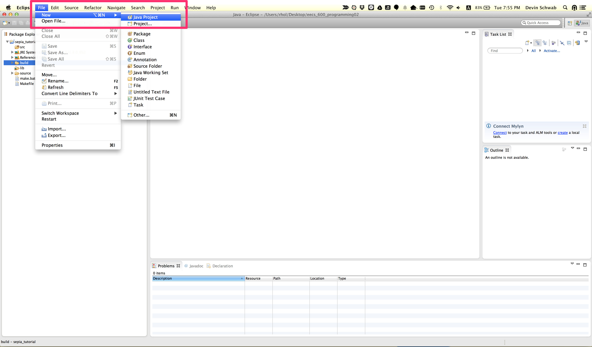
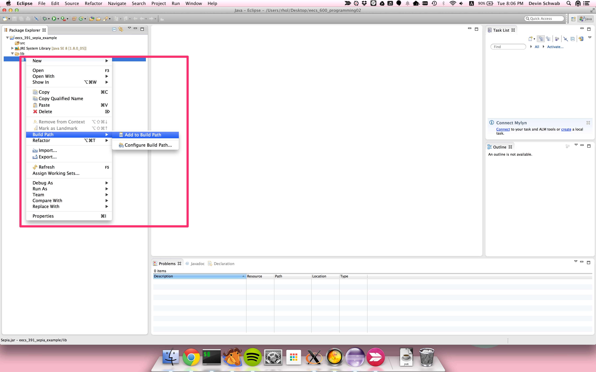

Setup¶
This document assumes that you are using Eclipse. Other IDEs such as Intellij will work, but you will need to figure out the proper setup instructions.
If you don’t have eclipse you can go to the Eclipse website and follow the installation instructions for your operating system.
You will need to download the Sepia.jar file from the course
website.
Eclipse Project Setup¶
Open Eclipse and in the main menu click file->new->Java Project. This should open a new dialogue window. Give your project a name and then click finish.
{kind=link}
You should now have a new project in the package explorer on the left side of the screen. Click the arrow next to the package name to expand the package and see its subfolders. You will now need to add the sepia.jar to the build path of this project.
Right click on the project name and select new->folder. Call the
folder lib and click finish. Now drag the download Seipa.jar file
to lib folder and when prompted select the copy option.
{kind=link}
Now right click on the Sepia.jar and select Build Path->Add to Build Path. If you don’t see the Sepia.jar file you may need to click the small arrow on the left the lib folder to expand the folder.
{kind=link}
If you have done everything properly there should be no errors. You are now ready to create your first agent.
Class Files¶
For some assignments you may be provided with an enemy agent. The enemy agent will be a .class file that you will need to add to your class path.
First create an empty folder to hold the provided .class files. Call it something like “enemy_agents”. Then you will need to create the package directory structure for the .class file. If the .class expects to be in package edu.cwru.sepia.agent then underneath your “enemy_agents” folder you need to have the folder hierarchy edu/cwru/sepia/agent. Then in the agent folder you will put the provided class file.
Next you have to add the enemy_agent folder to the classpath. Right click on the project and select Build Path->Configure Build Path. Then Click the button that says “Add class folder”. Select the enemy_agents folder and save. You are now ready to use the class. file.
If you get errors about the class not being found double check that the package and agent name in the config file match the folder heirarchy and class name you just set up.
Command Line Setup¶
It is also possible to avoid Eclipse and use the command line. Compiling and running use the standard javac and java commands respectively. The most important thing to consider is the directory you run SEPIA from and the classpath arguments you use.
Consider a directory structure like the following
MySEPIAProject
- data
- my_map.xml
- my_config.xml
- lib
- Sepia.jar
- src
- edu
- cwru
- sepia
- agent
MyAgent.java
To compile this you would go into the MySEPIAProject folder and run the following
javac -cp lib/Sepia.jar src/edu/cwru/sepia/agent/MyAgent.java
This will produce a MyAgent.class file in the src/edu/cwru/sepia/agent directory. To run the configuration with this new class file you would use the command
java -cp lib/Sepia.jar:src edu.cwru.sepia.Main2 data/my_config.xml
Note
On Windows the classpath arguments will be separated by semicolons, whereas on Unix based systems (Linux, Mac, etc) they will be separated by a colon.
Class Files¶
If you are provided with a .class file first create a new folder to act as the root of the provided class files. Call it something like “enemy_agents”. Then create the folder hierarchy to match the class file’s expected package. For instance if the expected package is edu.cwru.sepia.agent then you will need to put the folder hierarchy edu/cwru/sepia/agent underneath your new enemy_agents folder. Then you will place the class file in the agent folder.
To run you will need to include the path to the enemy_agents folder in your class path. For example:
java -cp lib/Sepia.jar:enemy_agents:src edu.cwru.sepia.Main2
data/my_config.xml
If you have issues double check the folder hierarchy matches the path and that the config file specifies that package and the proper class file name.